分类体现了一种集合的思想，能够培养孩子的观察能力、认识事物的能力和总结规律的能力。
要对事物进行分类整理，需要寻找事物的共同特征。这些特征可能是事物外在的属性，如颜色、形状、大小；也可能是事物内在的某种联系或者属性，如事物的功能、种类等。5～7岁的孩子要具备发现一组事物共同特征的能力，要能够根据共同特征对事物进行分类，还要能够对事物进行多角度的分类。
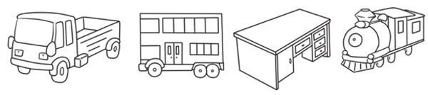
典型例题 1 下图中的6件物品，如果要分成2类，应该如何分呢？
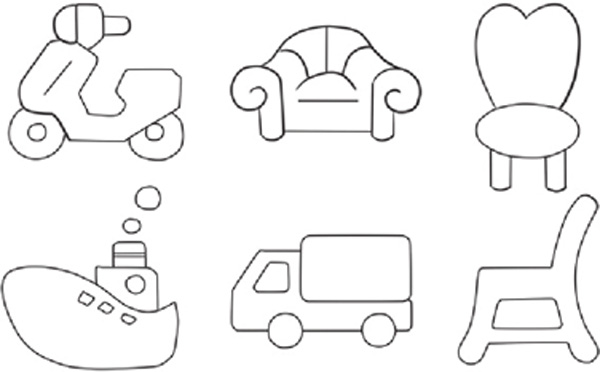
从图中可以看出来，摩托车、轮船、卡车都属于交通工具，沙发、椅子、凳子属于家具，因此可以按照用途对6件物品进行分类。摩托车、轮船、卡车归为一类，沙发、椅子、凳子归为一类。
典型例题 2 下面的图形中，哪一个跟别的图形不一样呢？
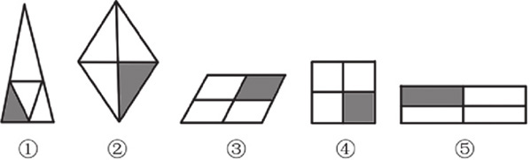
图中的5个图形，共同的特征是都被划分成了4份，都有1份被涂上了阴影。不同的是，①号图形没有被等分，其他的图形都是被等分的，所以①号图形跟其他图形不同。
典型例题 3 如果让你把下面的图形分类，你能分成几类呢？
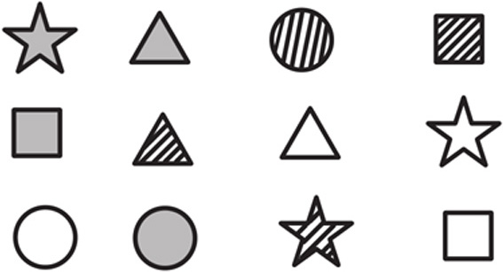
观察图中的图形，可以知道图形中有圆形、正方形、三角形和五角星等4种形状，图形中有的没有被涂色，有的被涂成灰色，还有的被填充了斜线，所以可以初步确定以形状为划分标准，或者以图形填充的花纹为划分标准。
如果以形状为划分标准，12个图形应该分为4类，如下。
三角形：
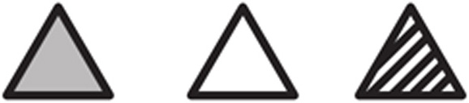
正方形：
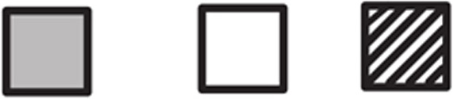
圆形：
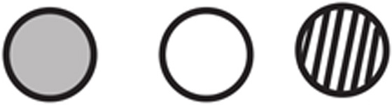
五角星：如果以图形填充的花纹为划分标准，12个图形可以分为3类，如下。没有填
填充灰色：
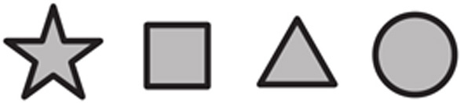
填充斜线：
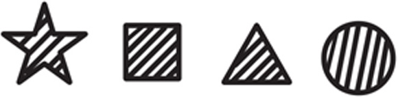
1.你能把下图中的物品分成2类吗？怎么分？
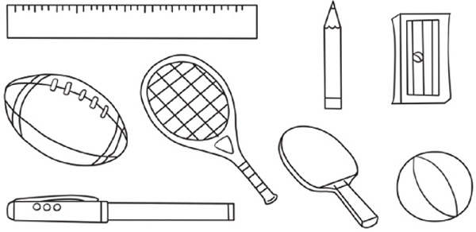
2.如果让你给下面的物品分类，你能把下面的物品分成几类？
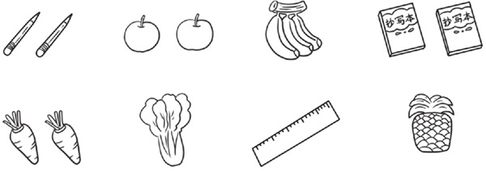
3.你能把下面的6幅图分成2类吗？有几种分法？
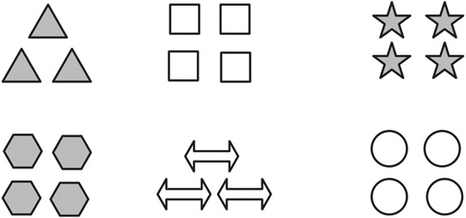
4.你能用不同的方法为下面的扑克牌分类吗？
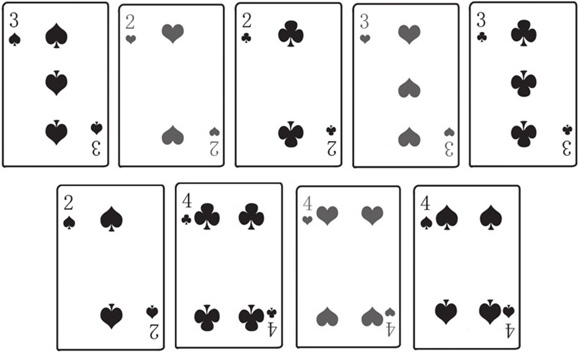
5.下面每组物品中，有一个物品跟其他物品不是同一类的，你能把它圈出来吗？
（1）
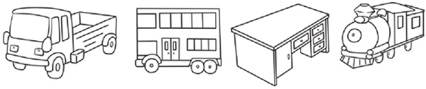
（2）
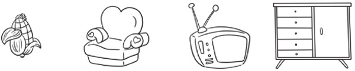
6.下面的每组图形中，有一个图形跟其他图形不一样，你能把它圈出来吗？
（1）
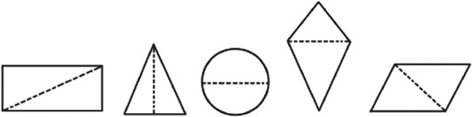
（2）
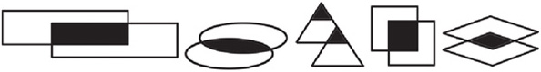
（3）
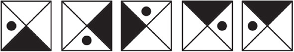